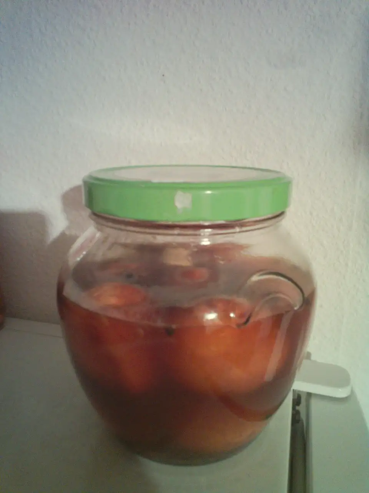

Soleier (pickled eggs)

Soleier are a german pub dish. They are typically enjoyed between two beers.
- ⏲️ Preparation time: 10min
- 🍳 Cook time: 10min
- 🍽️ Servings: 10
Ingredients
- peels of five onions
- 10 eggs
- 2 loorber leaves
- 3 cloves
- 4 allspice
- 1Tbsp peppercorns
- 1Tbsp caraway seeds
- 1Tbsp mustard seeds
- 1tsp of Szechuan pepper (optional)
- 1tsp lovage (optional)
- 1tsp nutmeg (optional)
- 100mL vinegar
- 3 cloves of garlic
Directions
- Put 750mL of water and the peels of five onions in a pot and let them cook for five minutes. Remove the peels about twenty minutes later.
- Put the eggs, one teaspoon of sugar, two tablespoons of salt and all spices (but vinegar and garlic) in the pot, bring it to a boil and cook them for seven minutes.
- Use a spoon to remove the eggs from the pot and crack them all around. Do not remove the eggshell!
- Place the eggs and the garlic in a jar, fill it with the spiced water and add the vinegar. Add water, if needed, so that the eggs are covered.
- Let them rest for at least three days and at most two weeks at room temperature or slightly below.
Consumption Recommendation
- Peel the egg and cut it in half.
- Remove the yolk and fill the egg with mustard, oil, salt and pepper.
- Place the yolk on top.
Contribution
- SvenTgithub